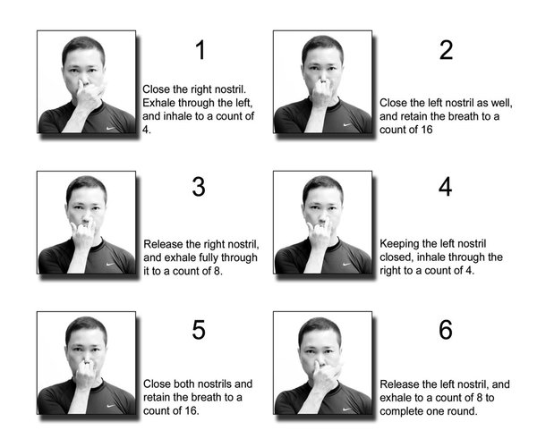

Some of the great asanas for Longetivity
- Anulom Vilom (The Breathing Exercize) 
- Surya-namaskar (Sun Salutation Sequence)
- Uttanasana (Standing And Forward Bent Posture)
Steps of Uttanasana - Uttanasana (Standing And Forward Bent Posture)
- Kaki Mudra Steps of Kaki Mudra
- Sarvang Asana ( Shoulder Stand Posture) Steps of Sarvang Asana
Here We will a detailed way of performing the SuryaNamaskar
Step 1. Pranamasana (Prayer pose)
Stand at the edge of your mat, keep your feet together and balance your weight equally on both the feet. Expand your chest and relax your shoulders. As you breathe in, lift both arms up from the sides, and as you exhale, bring your palms together in front of the chest in prayer position.

Step 2. Hastauttanasana (Raised arms pose)
Breathing in, lift the arms up and back, keeping the biceps close to the ears. In this pose, the effort is to stretch the whole body up from the heels to the tips of the fingers.
Tip to deepen this yoga stretch:
You may push the pelvis forward a little bit. Ensure you're reaching up with the fingers rather than trying to bend backward.

Step 3. Hastapadasana (Standing forward bend)
how to do surya namaskar
Breathing out, bend forward from the waist keeping the spine erect. As you exhale completely, bring the hands down to the floor beside the feet.
Tip to deepen this yoga stretch:
You may bend the knees, if necessary, to bring the palms down to the floor. Now make a gentle effort to straighten the knees. It's a good idea to keep the hands fixed in this position and not move them henceforth until we finish the sequence.

Step 4. Ashwa Sanchalanasana (Equestrian pose)
sun salutation steps
Breathing in, push your right leg back, as far back as possible. Bring the right knee to the floor and look up.
Tip: How to deepen this yoga stretch?
Ensure that the left foot is exactly in between the palms.

Step 5. Dandasana (Stick pose)
12 poses of surya namaskar
As you breathe in, take the left leg back and bring the whole body in a straight line.
Tip to deepen this yoga stretch:
Keep your arms perpendicular to the floor.

Step 6. Ashtanga Namaskara (Salute with eight parts or points)
surya namaskar poses
Gently bring your knees down to the floor and exhale. Take the hips back slightly, slide forward, rest your chest and chin on the floor. Raise your posterior a little bit. The two hands, two feet, two knees, chest and chin (eight parts of the body) should touch the floor.
Learn how to treat your mind, body, and emotions with the processes taught in The Art of Living Meditation and Breath workshop. This is your complete healthcare package.
Learn More

Step 7. Bhujangasana (Cobra pose)
how to do sun salutation
Slide forward and raise the chest up into the Cobra pose. You may keep your elbows bent in this pose with the shoulders away from the ears. Look up at the ceiling.
Tip to deepen this yoga stretch:
As you inhale, make a gentle effort to push the chest forward; as you exhale, make a gentle effort to push the navel down. Tuck the toes under. Ensure you're stretching just as much as you can and not forcing your body.

Step 8. Adho Mukha Svanasana (Downward facing dog pose)
sun salutation yoga pose
Breathing out, lift the hips and the tailbone up to bring the body into an inverted ‘V’ pose.
Tip to deepen this yoga stretch:
If possible, try and keep the heels on the ground and make a gentle effort to lift the tailbone up, going deeper into the stretch.

Step 9. Ashwa Sanchalanasana (Equestrian pose)
sun salutation steps
Breathing in, bring the right foot forward in between the two hands. The left knee goes down on the floor. Press the hips down and lookup.
Tip to deepen this yoga stretch:
Place the right foot exactly between the two hands and the right calf perpendicular to the floor. In this position, make a gentle effort to push the hips down towards the floor, to deepen the stretch.

Step 10. Hastapadasana (Standing forward bend)
Sun Salutation yoga
Breathing out, bring the left foot forward. Keep the palms on the floor. You may bend the knees, if necessary.
Tip to deepen this yoga stretch:
Gently straighten the knees, and if you can, try and touch your nose to the knees. Keep breathing.

Step 11. Hastauttanasana (Raised arms pose)
Sun Salutation or Surya Namaskar Yoga
Breathing in, roll the spine up. Raise the hands up and bend backward a little bit, pushing the hips slightly outward.
Tip to deepen this yoga stretch:
Ensure that your biceps are beside your ears. The idea is to stretch up more rather than stretching backward.

Step 12. Tadasana (Mountain Pose)
how to do Sun salutation sequence
As you exhale, first straighten the body, then bring the arms down. Relax in this position and observe the sensations in your body.
This completes one set of Surya Namaskar. Complete the round by repeating the steps. Only this time, start with taking the left foot behind in step number 4 and bringing the right foot forward in step number 10. Once done, you would’ve completed one round of Surya Namaskar.

DEF, Author